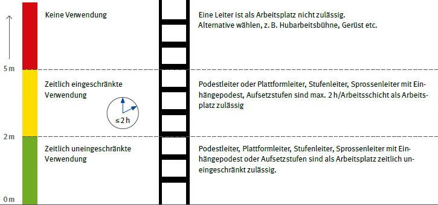

Bevor eine Leiter oder ein Tritt als hoch gelegener Arbeitsplatz oder als Zugang zu hoch gelegenen Arbeitsplätzen zur Verfügung gestellt und verwendet wird, muss im Rahmen der Gefährdungsbeurteilung ermittelt werden, welches Arbeitsmittel für die auszuführende Arbeit geeignet und sicher ist.
Die Betriebssicherheitsverordnung fordert in Anhang 1, Abschnitt 3.1.4:
"Die Verwendung von Leitern als hoch gelegene Arbeitsplätze [...] ist nur in solchen Fällen zulässig, in denen
| a) | wegen der geringen Gefährdung und wegen der geringen Dauer der Verwendung die Verwendung anderer, sichererer Arbeitsmittel nicht verhältnismäßig ist und |
| b) | die Gefährdungsbeurteilung ergibt, dass die Arbeiten sicher durchgeführt werden können." |
In der Gefährdungsbeurteilung sind insbesondere das Arbeitsmittel, das Arbeitsverfahren sowie die Arbeitsumgebung zu berücksichtigen.
Sicherere Arbeitsmittel/-verfahren zu Leitern können z. B. sein:
Leitern können zum Einsatz kommen, wenn bauliche Gegebenheiten vorliegen, die der Unternehmer nicht ändern kann.
Beispiele für bauliche Gegebenheiten können sein:
Die Betriebssicherheitsverordnung (BetrSichV) wird durch die Technische Regel für Betriebssicherheit TRBS 2121 Teil 2 "Gefährdung von Beschäftigten bei der Verwendung von Leitern" konkretisiert.
In der TRBS 2121 Teil 2 werden zwei Arten der Verwendung von Leitern unterschieden.
"Die Verwendung von Leitern als Zugang zu oder zum Abgang von hochgelegenen Arbeitsplätzen ist zulässig, wenn der zu überwindende Höhenunterschied maximal 5 m beträgt und
| – | wegen der geringen Gefährdung und der geringen Verwendungsdauer die Verwendung anderer, sichererer Arbeitsmittel nicht verhältnismäßig ist und |
| – | die Gefährdungsbeurteilung ergibt, dass der Zugang und Abgang sicher durchgeführt werden können. |
Bei der Prüfung der Verhältnismäßigkeit sind die baulichen Gegebenheiten zu berücksichtigen. Wird die Leiter als Zugang zum Erreichen von Arbeitsplätzen sehr selten benutzt, darf der zu überbrückende Höhenunterschied auch mehr als 5 m betragen.
Leitern, die als Aufstieg verwendet werden, müssen so beschaffen sein, dass sie mindestens 1 m über die Austrittsstelle hinausragen, sofern nicht andere Vorrichtungen ein sicheres Festhalten erlauben."
Nach § 5 (4) der Betriebssicherheitsverordnung hat "der Arbeitgeber dafür zu sorgen, dass Beschäftigte nur die Arbeitsmittel verwenden, die er ihnen zur Verfügung gestellt hat oder deren Verwendung er ihnen ausdrücklich gestattet hat."

Abb. 1 gesicherte Leiter als Verkehrsweg mit 1 m Überstand

Abb. 2 eingehängte Leiter als Verkehrsweg mit der Möglichkeit zum Festhalten am Geländer
Beispiele für sichere Alternativen als Zugang zu bzw. Abgang von hoch gelegenen Arbeitsplätzen sind:
Bei der Auswahl der geeigneten Zugänge zu hoch gelegenen Arbeitsplätzen sind zu berücksichtigen:
Dabei dürfen keine zusätzlichen Absturzgefahren entstehen.
Beispiele für zusätzliche Absturzgefahren sind:

Abb. 3 Leiter als Verkehrsweg
"Die Verwendung von Leitern als hoch gelegener Arbeitsplatz ist nur zulässig
Bei der Prüfung der Verhältnismäßigkeit sind die baulichen Gegebenheiten zu berücksichtigen.
Aufgrund der Absturzgefährdung und der höheren ergonomischen Belastung dürfen tragbare Leitern als hoch gelegener Arbeitsplatz nur verwendet werden, wenn der Beschäftigte mit beiden Füßen auf einer Stufe oder Plattform steht und der Standplatz auf der Leiter nicht höher als 5 m über der Aufstellfläche liegt.
In besonders begründeten Ausnahmefällen (z. B. Arbeiten in engen Schächten oder bei der Ernte im Obstbau) ist ein Arbeiten auf tragbaren Leitern mit Sprossen zulässig. Die besonderen Gründe sind vom Arbeitgeber in der Gefährdungsbeurteilung zu dokumentieren.
Zeitweilige Arbeiten2 sind Arbeiten, die einen Zeitraum von zwei Stunden je Arbeitsschicht nicht überschreiten, wie z. B. Wartungs-, Instandhaltungs-, Inspektions-, Mess- und Montagearbeiten.
Zeitweilige Arbeiten an hoch gelegenen Arbeitsplätzen im Freien unter Verwendung von Leitern dürfen nur ausgeführt werden, wenn die Umgebungs- und Witterungsverhältnisse die Sicherheit und Gesundheit der Beschäftigten nicht beeinträchtigen.
Insbesondere dürfen Arbeiten nicht begonnen oder fortgesetzt werden, wenn witterungsbedingt, z. B. durch starken oder böigen Wind, Vereisung oder Schneeglätte, die Möglichkeit besteht, dass Beschäftigte abstürzen oder durch herabfallende oder umfallende Teile verletzt werden."
Die Verwendung von Stufen- und Plattformleitern erfüllt die Bedingungen der TRBS 2121 Teil 2 bei Verwendung einer Leiter als Arbeitsplatz.
Einhängepodeste und Aufsetzstufen können die Bedingungen ebenfalls erfüllen, sind aber nur bedingt zu empfehlen.

Abb. 4 Stufenleiter

Abb. 5 Stufenstehleiter mit größerer Plattform und höherem Sicherheitsbügel

Abb. 6 Einhängepodest

Abb. 7 Aufsetzstufen für Sprossenstehleiter
Unterscheidung Stufe/Sprosse:

Abb. 8 Stufe

Abb. 9 Sprosse

Abb. 10 Leiter als Arbeitsplatz
Können als Ergebnis der Gefährdungsbeurteilung Leitern und Tritte verwendet werden, ergeben sich für den Unternehmer insbesondere folgende Pflichten:
Von der Verwendung nicht normkonformer Leitern wird abgeraten.
Bei Leitern und Tritten, die das GS-Zeichen ("Geprüfte Sicherheit") oder das DGUV Test Zeichen tragen, hat eine Baumusterprüfung durch eine hierfür zugelassene Prüf- und Zertifizierungsstelle ergeben, dass die geltenden Sicherheitsanforderungen eingehalten sind.
Können als Ergebnis der Gefährdungsbeurteilung Leitern und Tritte benutzt werden, ergeben sich für den Unternehmer folgende Pflichten: